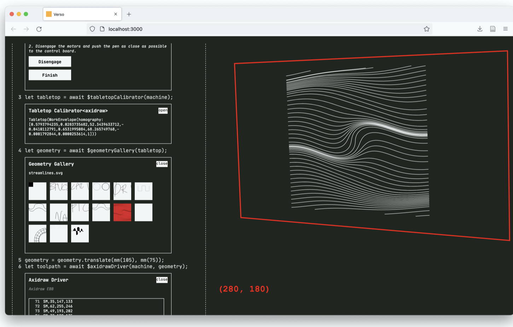
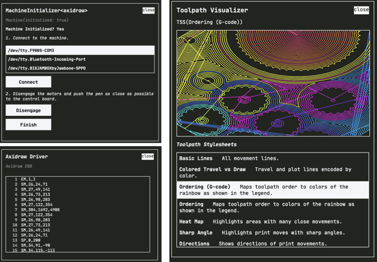

Verso is a programming environment for authoring exploratory digital fabrication workflows as full-fledged programs. Compared to common-case fabrication that is well-supported by CAD and CAM tools, exploratory fabrication requires low-level control and experimentation. Verso addresses this by supporting, not abstracting away, concern-for low-level control. It provides a code editor with inline GUIs for fabrication-specific tasks alongside a means of generating custom toolpath visualizations.

We need more programming power than raw G-code. Exploratory digital fabrication demands high expressivity, and high-expressivity involves controlling low-level machine details like accelerations, extrusions rates, and feeds and speeds. However, while machine instruction sets such as G-code afford this low level control, they are akin to assembly language and make it difficult to build abstractions.

Verso is a tool for fabrication-as-programming. Verso lets users define exploratory manufacturing tasks as code in a web-based code editor. (Left) Users can use Javascript's language features and libraries to generate machine code. (Right) Verso generates toolpath visualizations that can be projected in-situ in physical space to prview machine behavior.

Within-code GUIs and task-specific toolpath visualizations make fabrication-as-programming easier. Within the editor, isers can call module functions such as
$machineInitializer which spawn an associated GUI. In this case, the Machine Initializer module walks the user through setting up a physical machine. To better understand machine behavior, Verso provides toolpath stylesheets (TSS) which generate task-specific visualizations for a given set of machine instructions. Users define rules for the styling to get different visualizations. For example, one TSS maps the order of tool movements to colors of a spectrum, and another shows the amount of time a tool spends in small areas; in the case of laser cutting, this could pose a combustion risk.